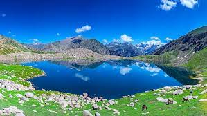
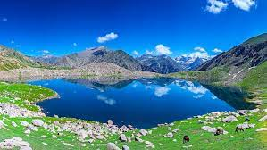

Kumrat Valley, a hidden gem in the Hindu Kush mountains, is a breathtakingly beautiful alpine valley known for its towering peaks, lush green forests, and pristine rivers. A paradise for nature lovers and outdoor enthusiasts, Kumrat Valley offers a variety of activities, from hiking and camping to fishing and rafting.Visitors can also experience the local culture and cuisine, or simply relax and enjoy the stunning scenery.
Swat, the Switzerland of Pakistan In the embrace of the Hindu Kush, lies Swat, a valley of unparalleled beauty.Towering peaks, lush valleys, and crystal-clear streams paint a breathtaking landscape.Swat's rich cultural heritage is evident in its ancient Buddhist ruins,traditional villages, and hospitable people.From the bustling bazaars of Mingora to the serene meadows of Kalam, Swat offers something for everyone. Whether you seek adventure or tranquility, Swat is the perfect destination to immerse yourself in nature and culture.
 

Naran, a scenic town in the Himalayas, is a paradise for nature lovers. Snow-capped peaks, lush meadows, and cascading waterfalls paint a mesmerizing landscape.Visitors can enjoy hiking, fishing, camping, and boating in Naran. The pristine Saiful Malook Lake, surrounded by snow-capped peaks, is a must-visit.Naran is a Himalayan gem, a place to escape the mundane and immerse in nature's beauty.


Babusar Top, a breathtaking mountain pass in the Himalayas, offers stunning views of snow-capped peaks, lush meadows, and crystal-clear streams.Visitors can enjoy hiking, camping, and picnicking at Babusar Top. The picturesque Lulusar Lake, located nearby, is a popular tourist attraction.